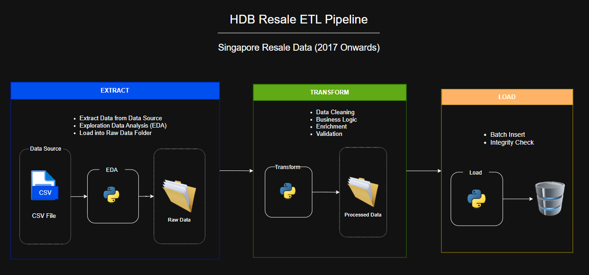

This project was built as part of a team calloboration project during bootcamp training. It develops an end-to-end ETL pipeline for Singapore HDB resale dataset (2017 onwards).The goal was to extract the latest resale transaction data, applies cleaning and enrichment through defined business logic, and load the processed data into a PostgreSQL to support downstream analysis and insights.

In this project, I was responsible for implementing the load process that insert transformed data into PostgreSQL. I setup and managed the database schema using Python library — SQLAlchemy to ensure the structure stay consistent and scalability. To reduce manual setup errors, I automated the table creation and schema checks. Since the dataset was large, I built a batch loading process that handled 5000 rows at a time, which kept things running smoothly. I also added logging and error handling so we could track issues and make the process more reliable. To ensure the correctness of the data, I ran count checks and integrity tests between the source and the database. Finally, I worked closely with teammates handling the Extract and Transform stage, making sure the data formats matched and everything fit together without problems.